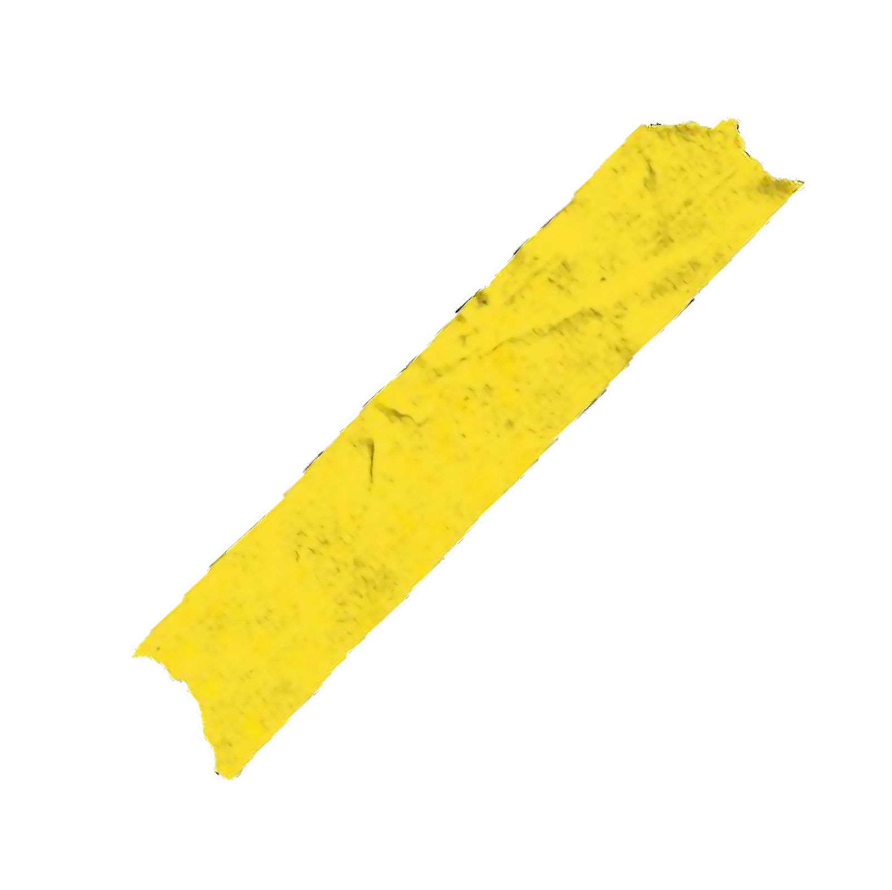

I could take the high road
But I know that I'm going low
I'm a ban-, I'm a bandito
I could take the high road
But I know that I'm going low
I'm a ban-, I'm a bandito
I could take the high road
But I know that I'm going low
I'm a ban-, I'm a bandito
This is the sound we make
When in between two places
Where are we used to bleed
And where're our blood needs to be
I could take the high road
But I know that I'm going low
I'm a ban-, I'm a bandito
I could take the high road
But I know that I'm going low
I'm a ban-, I'm a bandito
In city, I feel my spirit is contained
Like neon inside the glass, they form my brain
But I recently discovered it's a heatless fire
Like nicknames they give themselves to uninspire
Began with bullet, now add fire to the proof
But I'm still not sure if fear's a rival or close relative to truth
Either way it helps to hear these words bounce off of you
The softest echo could be enough for me to make it through
Folina
Sahlo Folina
Sahlo Folina
Sahlo Folina
I created this world
To feel some control
Destroy it if I want
So I sing Sahlo Folina
Sahlo Folina
Sahlo...
I could take the high road
But I know that I'm going low (Sahlo)
I'm a ban-, I'm a bandito
I could take the high road
But I know that I'm going low
I'm a ban-, I'm a bandito
I could take the high road
But I know that I'm going low (Sahlo)
I'm a ban-, I'm a bandito (Folina)
I created this world
To feel some control
Destroy it if I want
So I sing Sahlo Folina
Sahlo Folina

Twenty One Pilots - Car Radio
CAR RADIO
I ponder of something great
My lungs will fill and then deflate
They fill with fire, exhale desire
I know it's dire, my time today
I have these thoughts so often, I ought
To replace that slot with what I once bought
'Cause somebody stole my car radio
And now I just sit in silence
Sometimes quiet is violent
I find it hard to hide it, my pride is no longer inside
It's on my sleeve, my skin will scream
Reminding me of who I killed inside my dream
I hate this car that I'm driving, there's no hiding for me
I'm forced to deal with what I feel
There is no distraction to mask what is real
I could pull the steering wheel
I have these thoughts so often, I ought
To replace that slot with what I once bought
'Cause somebody stole my car radio
And now I just sit in silence
I ponder of something terrifying
'Cause this time there's no sound to hide behind
I find over the course of our human existence
One thing consists of consistence
And it's that we're all battling fear
Oh dear, I don't know if we know why we're here
Oh my, too deep, please stop thinking
I liked it better when my car had sound
There are things we can do
But from the things that work there are only two
And from the two that we choose to do
Peace will win and fear will lose
And there's faith and there's sleep
We need to pick one please because
Faith is to be awake and to be awake is for us to think
And for us to think is to be alive
And I will try with every rhyme
To come across like I am dying
To let you know you need to try to think
I have these thoughts so often, I ought
To replace that slot with what I once bought
'Cause somebody stole my car radio
And now I just sit in silence